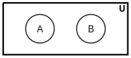

Fuzzy Sets
Fuzzy Logic
- Fuzzy logic is a mathematical framework used to handle reasoning that is approximate rather than fixed or exact. It is particularly useful for dealing with uncertainty and imprecision in real-world scenarios.
- History of fuzzy logic creation:
- Earlier, there were three fundamental types of logic that formed the basis of mathematical
reasoning:
- Relational Logic: This applies to sets and their relationships, focusing on how elements relate to each other within or across sets.
- Boolean Logic: This applies to boolean variables (true/false or 0/1), forming the basis of classical logical operations used in computer science and digital circuits.
- Predicate Logic: This applies to well-formed formulas or propositions, used for expressing statements and their relationships in a formalized way.
- The combination of these three logics led to the development of a new language called fuzzy logic. This framework addresses additional problems that cannot be solved effectively by relational, boolean, or predicate logic alone. By merging concepts from these three, fuzzy logic provides a way to deal with vagueness and uncertainty in a structured manner.
- Earlier, there were three fundamental types of logic that formed the basis of mathematical
reasoning:
- Fuzzy logic is built on the concepts of fuzzy sets and fuzzy algebra. These terms are often used interchangeably, as they describe the same foundational ideas.
- Example of Fuzzy Logic:
- Consider the concept of "tallness." In classical (boolean) logic, a person is either "tall" (true) or "not tall" (false). However, in fuzzy logic, tallness can have degrees. For example, a height of 5'7" might have a tallness degree of 0.6, while a height of 6'2" might have a tallness degree of 0.9. This allows fuzzy logic to represent real-world scenarios more accurately.
- Fuzzy logic is widely used in applications like temperature control systems, where instead of defining fixed thresholds (e.g., "hot" or "cold"), the system can work with gradual transitions such as "warm" or "cool."
Crisp Logic vs Fuzzy Logic
- In any problem, if we apply crisp logic, there are only two possible outputs:
1. Yes or No, or 2. True or False.
For example: Suppose you are using crisp logic and someone gives you a few food items to taste. After tasting each item, they ask, "Is this item sweet?" According to crisp logic, the answer will be either "Yes" or "No"—no other possibilities exist. - In fuzzy logic, there is room for confusion and uncertainty. Fuzzy logic can have multiple outputs
such as "Maybe," "May not be," "Absolutely," "Partially," etc.
For example: Now consider fuzzy logic. Someone asks you about a person in front of you, "Is this person honest?" Since your brain uses fuzzy logic, the answer can be on a spectrum, such as:- Extremely Honest
- Very Honest
- Moderately Honest
- Dishonest
- Very Dishonest
- Extremely Dishonest
- Extremely Honest = 90
- Very Honest = 70
- Moderately Honest = 50
- Dishonest = 30
- Very Dishonest = 20
- Extremely Dishonest = 10

Crisp Set
- Let’s understand it with an example:
- Consider the universal set U as all students. Let A represent
students in the 10th class, and B represent students in the 12th class.
Since there are no common elements between students of the 10th and 12th classes, sets A and B are implemented with strict boundaries.
 - Strict boundaries mean that:
- An element inside the boundaries of set A belongs 100% to set A.
- An element outside the boundaries of set A does not belong to set A at all (0%).
The same logic applies to set B as well. There is no intermediate case like belonging 50% or 20% to a set. It is always a binary decision: either 100% or 0%.
This behavior is similar to what we observed in crisp logic, where outputs are strictly binary (e.g., "Yes" or "No," "True" or "False"). Thus, crisp logic operates on crisp sets. - In contrast, a fuzzy set behaves exactly the opposite, allowing elements to have partial membership in a set, such as 50% or 70%. Fuzzy sets introduce flexibility where crisp sets enforce strict boundaries.
Fuzzy Set
- Let’s understand fuzzy sets with an example:
- Consider a universal set U representing all students. Two subsets are created:
- G - Represents "good students."
- S - Represents "bad students."
- In a fuzzy set, every element is represented as an ordered pair in the format:
G = {(g, μ(g))}- The first part, g, is the element of the set.
- The second part, μ(g), is the membership function, which measures the degree to which the element g belongs to the set.
- Membership values range between 0 and 1 (inclusive).
- For example:
G = {(A, 0.9), (B, 0.7), (C, 0.1), (D, 0.3)}- The membership value of A is 0.9, meaning A strongly belongs to the set of "good students" G.
- The membership value of C is 0.1, meaning C weakly belongs to the set of "good students."
- If an element has a membership value of 0, it does not belong to the fuzzy set at all. For instance, an element with membership value 0 would not appear in the set.
- Now let’s consider the "bad students" set S using the same students:
S = {(A, 0.1), (B, 0.3), (C, 0.1), (D, 0.7)}- Here, the membership function measures the degree of "badness."
- For example, A is strongly associated with the "good students" set G (membership value 0.9). Thus, in the "bad students" set S, its membership value is low (0.1).The same principle applies to other students.
- One key feature of fuzzy sets is that an element can belong to multiple sets simultaneously. For
example, A belongs to both G and S, but:
- In G, the membership value is 0.9 (indicating a strong association with "good students").
- In S, the membership value is 0.1 (indicating a weak association with "bad students").
- Definition: A fuzzy set is a set where each element has a degree of membership defined by a membership function, with values ranging between 0 and 1. Fuzzy sets allow partial membership, unlike crisp sets, which are strictly binary (either 0 or 1).
Cardinality of Fuzzy Sets
The cardinality of a fuzzy set is a measure of the size or "total membership" of the set. It is calculated by summing the membership values of all elements in the fuzzy set.
Mathematical Definition
Let \( A \) be a fuzzy set defined on a universal set \( X \), with membership function \( \mu_A(x) \). The cardinality of \( A \), denoted as \( |A| \), is given by:
\[ |A| = \sum_{x \in X} \mu_A(x) \]
Example
Consider a fuzzy set \( A \) representing "tall people" defined on the universal set \( X = \{x_1, x_2, x_3\} \), where:
\[ A = \{ (x_1, 0.6), (x_2, 0.8), (x_3, 0.4) \} \]
The membership values are:
- \( \mu_A(x_1) = 0.6 \)
- \( \mu_A(x_2) = 0.8 \)
- \( \mu_A(x_3) = 0.4 \)
Now, calculate the cardinality:
\[ |A| = 0.6 + 0.8 + 0.4 = 1.8 \]
Hence, the cardinality of the fuzzy set \( A \) is \( 1.8 \).
Fuzzy Set Operations
If fuzzy sets are given to us, for example, set A and set B, various operations can be performed on them. These operations help us manipulate and analyze fuzzy sets effectively.
Union: (A ⋃ B)
- When the union of A and B is performed, the new set is generated based on a specific rule. A key principle to remember is that while performing operations like union or intersection, the elements in the set do not change, only their associated membership values are modified.
-
μ(A ⋃ B)(x) = max ( μA(x),
μB(x) )
This means, for the same element in sets A and B, the maximum membership value is chosen for the union. For example, if an element has membership values 0.9 in set A and 0.1 in set B, the resulting membership value in the union will be 0.9.
Intersection: (A ⋂ B)
-
μ(A ⋂ B)(x) = min ( μA(x),
μB(x) )
In the intersection, for the same element in sets A and B, the minimum membership value is chosen.
Example:
A = {(x1, 0.6), (x2, 0.7), (x3, 0.4)}
B = {(x1, 0.3), (x2, 0.2), (x3, 0.5)}
- (A ⋃ B) = {(x1, 0.6), (x2, 0.7), (x3, 0.5)}
- (A ⋂ B) = {(x1, 0.3), (x2, 0.2), (x3, 0.4)}
Complement (Ac)
- μ(Ac) = 1 - μA(x)
- here also only the membership value will be changed
- Example:
A = {(x1, 0.6), (x2, 0.7), (x3, 0.4)}
B = {(x1, 0.3), (x2, 0.2), (x3, 0.5)} - Ac = {(x1, (1 - 0.6)), (x2, (1 - 0.7)),
(x3,
(1- 0.4))}
= {(x1, 0.4), (x2, 0.3), (x3, 0.6)} - Bc = {(x1, (1 - 0.3)), (x2, (1 - 0.2)),
(x3,
(1- 0.5))}
= {(x1, 0.7), (x2, 0.8), (x3, 0.4)}
Fuzzy Set Properties
-
Commutativity:
The result of union or intersection of two fuzzy sets does not depend on the order of the sets.
Example:
μ(A ∪ B)(x) = μ(B ∪ A)(x)
μ(A ∩ B)(x) = μ(B ∩ A)(x) -
Associativity:
The grouping of fuzzy sets during union or intersection does not affect the result.
Example:
μ((A ∪ B) ∪ C)(x) = μ(A ∪ (B ∪ C))(x)
μ((A ∩ B) ∩ C)(x) = μ(A ∩ (B ∩ C))(x) -
Distributivity:
Union and intersection operations distribute over each other.
Example:
μ(A ∩ (B ∪ C))(x) = μ((A ∩ B) ∪ (A ∩ C))(x)
μ(A ∪ (B ∩ C))(x) = μ((A ∪ B) ∩ (A ∪ C))(x) -
Idempotency:
Union or intersection of a fuzzy set with itself gives the same fuzzy set.
Example:
μ(A ∪ A)(x) = μA(x)
μ(A ∩ A)(x) = μA(x) -
Identity:
The union of a fuzzy set with the empty set (zero membership values) does not change the fuzzy set. The intersection of a fuzzy set with the universal set (membership values of 1) does not change the fuzzy set.
Example:
μ(A ∪ ∅)(x) = μA(x)
μ(A ∩ U)(x) = μA(x) -
Involution (Double Negation):
The complement of the complement of a fuzzy set is the fuzzy set itself.
Example:
(μ(Ac)(x))c = μA(x) -
Transitivity:
If A is related to B and B is related to C, then A is related to C. (This is more common in fuzzy relations.) -
De Morgan's Law:
The complement of the union is the intersection of the complements, and the complement of the intersection is the union of the complements.
Example:
μ((A ∪ B)c)(x) = μ(Ac ∩ Bc)(x)
μ((A ∩ B)c)(x) = μ(Ac ∪ Bc)(x)
Fuzzy Relations
- Fuzzy relation relates elements of one universe (X) to those of another universe (Y) through the Cartesian product of the two universes.
-
Suppose A ∈ X, B ∈ Y. The relation, represented by the
Cartesian product of A and B, is a subset of the Cartesian product of the universal sets X and Y. It
is expressed as:
R = A × B ⊆ X × Y -
Example:
A = {(a, 0.2), (b, 0.7), (c, 0.4)}
B = {(a, 0.5), (b, 0.6)}
μR(X, Y) = μA × B = min(μA(X), μB(Y))
\[ \mu_R(X, Y) = \begin{pmatrix} a & 0.2 & 0.5 \\ b & 0.5 & 0.6 \\ c & 0.4 & 0.4 \end{pmatrix} \]
- The matrix representing a fuzzy relation is called the "Fuzzy Matrix".
Cartesian Product
Consider the two fuzzy sets:
A = {0.4/x1 + 0.3/x2 + 0.2/x3}
B = {0.3/y1 + 0.5/y2}
The Cartesian product of two fuzzy sets is calculated by finding the minimum value of the membership grades of their corresponding elements. For each pair (x, y), we compute:
μR(xi, yj) = min(μA(xi), μB(yj))
Let us calculate for all pairs:
1. μR(x1, y1) = min(0.4, 0.3) = 0.3
2. μR(x1, y2) = min(0.4, 0.5) = 0.4
3. μR(x2, y1) = min(0.3, 0.3) = 0.3
4. μR(x2, y2) = min(0.3, 0.5) = 0.3
5. μR(x3, y1) = min(0.2, 0.3) = 0.2
6. μR(x3, y2) = min(0.2, 0.5) = 0.2
Now, we can represent the Cartesian product in matrix form:
\[ \mu_R(X, Y) = \begin{pmatrix} & y_1 & y_2 \\ x_1 & 0.3 & 0.4 \\ x_2 & 0.3 & 0.3 \\ x_3 & 0.2 & 0.2 \end{pmatrix} \]
Here:
- The rows correspond to elements of set A: x1, x2, x3.
- The columns correspond to elements of set B: y1, y2.
- Each cell represents the membership value calculated using the "min" operation.
Operations on Fuzzy Relations
Previously, we learned about operations on fuzzy sets. Now, we explore operations between two fuzzy relations.
-
Union:
μR⋃S(X, Y) = max(μR(X, Y),
μS(X, Y))
Example:\[ \mu_R(X, Y) = \begin{pmatrix} & a & b \\ a & 0.2 & 0.2 \\ b & 0.5 & 0.6 \\ c & 0.4 & 0.4 \end{pmatrix} \]
\[ \mu_S(X, Y) = \begin{pmatrix} & a & b \\ a & 0.3 & 0.5 \\ b & 0.1 & 0.4 \\ c & 0.3 & 0.6 \end{pmatrix} \]
\[ \mu_{R \cup S}(X, Y) = \begin{pmatrix} & a & b \\ a & 0.3 & 0.5 \\ b & 0.5 & 0.6 \\ c & 0.4 & 0.6 \end{pmatrix} \]
-
Intersection:
μR∩S(X, Y) = min(μR(X, Y),
μS(X, Y))
Example:\[ \mu_R(X, Y) = \begin{pmatrix} & a & b \\ a & 0.2 & 0.2 \\ b & 0.5 & 0.6 \\ c & 0.4 & 0.4 \end{pmatrix} \]
\[ \mu_S(X, Y) = \begin{pmatrix} & a & b \\ a & 0.3 & 0.5 \\ b & 0.1 & 0.4 \\ c & 0.3 & 0.6 \end{pmatrix} \]
\[ \mu_{R \cap S}(X, Y) = \begin{pmatrix} & a & b \\ a & 0.2 & 0.2 \\ b & 0.1 & 0.4 \\ c & 0.3 & 0.4 \end{pmatrix} \]
-
Complement:
μRc(X, Y) = 1 - μR(X, Y)
Example:\[ \mu_R(X, Y) = \begin{pmatrix} & a & b \\ a & 0.2 & 0.2 \\ b & 0.5 & 0.6 \\ c & 0.4 & 0.4 \end{pmatrix} \]
\[ \mu_{R^c}(X, Y) = \begin{pmatrix} & a & b \\ a & 0.8 & 0.8 \\ b & 0.5 & 0.4 \\ c & 0.6 & 0.6 \end{pmatrix} \]
Fuzzy Composition
- Fuzzy composition is the operation performed on two compatible fuzzy relations to produce a single fuzzy relation.
- Let \( R \) be a fuzzy relation from universe \( X \) to \( Y \) (\( R: X \rightarrow Y \)), and \( S \) be a fuzzy relation from universe \( Y \) to \( Z \) (\( S: Y \rightarrow Z \)). The composition of \( R \) and \( S \) represents a fuzzy relation from \( X \) to \( Z \) (\( R \circ S: X \rightarrow Z \)).
-
There are two common types of composition in fuzzy relations:
-
Fuzzy Max-Min Composition:
The membership value of the resulting relation \( \mu_{R \circ S}(x, z) \) is determined by taking the maximum value of the minimum membership values between \( R(x, y) \) and \( S(y, z) \) for all \( y \) in \( Y \).
\(\mu_{R \circ S}(x, z) = \max_{y \in Y} \big(\min(\mu_R(x, y), \mu_S(y, z))\big)\)
-
Fuzzy Max-Product Composition:
The membership value of the resulting relation \( \mu_{R \circ S}(x, z) \) is determined by taking the maximum value of the product of the membership values \( R(x, y) \) and \( S(y, z) \) for all \( y \) in \( Y \).
\(\mu_{R \circ S}(x, z) = \max_{y \in Y} \big(\mu_R(x, y) \cdot \mu_S(y, z)\big)\)
-
Fuzzy Max-Min Composition:
-
Key Notes:
- Fuzzy relations must be compatible for composition, meaning the output universe of \( R \) (e.g., \( Y \)) matches the input universe of \( S \).
- Fuzzy composition helps in modeling complex systems by linking intermediate relations.
Example Question: Fuzzy Max-Min Composition
\[ R_{x,y} = \begin{pmatrix} & y1 & y2 \\ x1 & 0.6 & 0.3 \\ x2 & 0.2 & 0.9 \end{pmatrix} \]
\[ S_{y,z} = \begin{pmatrix} & z1 & z2 & z3 \\ y1 & 1 & 0.5 & 0.3 \\ y2 & 0.8 & 0.4 & 0.7 \end{pmatrix} \]
\[ \mu_{R \circ S} = \begin{pmatrix} & z1 & z2 & z3 \\ x1 & ? & ? & ? \\ x2 & ? & ? & ? \end{pmatrix} \]
Now we will find each element of the resulting fuzzy relation using the formula for max-min composition:
\(\mu_{R \circ S}(x, z) = \max_{y \in Y} \big(\min(\mu_R(x, y), \mu_S(y, z))\big)\)
-
For (x1, z1):
\(\mu_{R∘S}(x_1, z_1) = \max\big(\min(\mu_R(x_1, y_1), \mu_S(y_1, z_1)), \min(\mu_R(x_1, y_2), \mu_S(y_2, z_1))\big)\)
= \(\max\big(\min(0.6, 1), \min(0.3, 0.8)\big)\)
= \(\max(0.6, 0.3)\)
= 0.6\[ \mu_{R \circ S} = \begin{pmatrix} & z1 & z2 & z3 \\ x1 & 0.6 & ? & ? \\ x2 & ? & ? & ? \end{pmatrix} \]
-
For (x1, z2):
\(\mu_{R∘S}(x_1, z_2) = \max\big(\min(\mu_R(x_1, y_1), \mu_S(y_1, z_2)), \min(\mu_R(x_1, y_2), \mu_S(y_2, z_2))\big)\)
= \(\max\big(\min(0.6, 0.5), \min(0.3, 0.4)\big)\)
= \(\max(0.5, 0.3)\)
= 0.5\[ \mu_{R \circ S} = \begin{pmatrix} & z1 & z2 & z3 \\ x1 & 0.6 & 0.5 & ? \\ x2 & ? & ? & ? \end{pmatrix} \]
-
For (x1, z3):
\(\mu_{R∘S}(x_1, z_3) = \max\big(\min(\mu_R(x_1, y_1), \mu_S(y_1, z_3)), \min(\mu_R(x_1, y_2), \mu_S(y_2, z_3))\big)\)
= \(\max\big(\min(0.6, 0.3), \min(0.3, 0.7)\big)\)
= \(\max(0.3, 0.3)\)
= 0.3\[ \mu_{R \circ S} = \begin{pmatrix} & z1 & z2 & z3 \\ x1 & 0.6 & 0.5 & 0.3 \\ x2 & ? & ? & ? \end{pmatrix} \]
-
For (x2, z1):
\(\mu_{R∘S}(x_2, z_1) = \max\big(\min(\mu_R(x_2, y_1), \mu_S(y_1, z_1)), \min(\mu_R(x_2, y_2), \mu_S(y_2, z_1))\big)\)
= \(\max\big(\min(0.2, 1), \min(0.9, 0.8)\big)\)
= \(\max(0.2, 0.8)\)
= 0.8\[ \mu_{R \circ S} = \begin{pmatrix} & z1 & z2 & z3 \\ x1 & 0.6 & 0.5 & 0.3 \\ x2 & 0.8 & ? & ? \end{pmatrix} \]
-
For (x2, z2):
\(\mu_{R∘S}(x_2, z_2) = \max\big(\min(\mu_R(x_2, y_1), \mu_S(y_1, z_2)), \min(\mu_R(x_2, y_2), \mu_S(y_2, z_2))\big)\)
= \(\max\big(\min(0.2, 0.5), \min(0.9, 0.4)\big)\)
= \(\max(0.2, 0.4)\)
= 0.4\[ \mu_{R \circ S} = \begin{pmatrix} & z1 & z2 & z3 \\ x1 & 0.6 & 0.5 & 0.3 \\ x2 & 0.8 & 0.4 & ? \end{pmatrix} \]
-
For (x2, z3):
\(\mu_{R∘S}(x_2, z_3) = \max\big(\min(\mu_R(x_2, y_1), \mu_S(y_1, z_3)), \min(\mu_R(x_2, y_2), \mu_S(y_2, z_3))\big)\)
= \(\max\big(\min(0.2, 0.3), \min(0.9, 0.7)\big)\)
= \(\max(0.2, 0.7)\)
= 0.7\[ \mu_{R \circ S} = \begin{pmatrix} & z1 & z2 & z3 \\ x1 & 0.6 & 0.5 & 0.3 \\ x2 & 0.8 & 0.4 & 0.7 \end{pmatrix} \]
Example Question: Max-Product Composition
\[ R_{x,y} = \begin{pmatrix} & y1 & y2 \\ x1 & 0.6 & 0.3 \\ x2 & 0.2 & 0.9 \end{pmatrix} \] \[ S_{y,z} = \begin{pmatrix} & z1 & z2 & z3 \\ y1 & 1 & 0.5 & 0.3 \\ y2 & 0.8 & 0.4 & 0.7 \end{pmatrix} \] \[ \mu_{R \circ S} = \begin{pmatrix} & z1 & z2 & z3 \\ x1 & ? & ? & ? \\ x2 & ? & ? & ? \end{pmatrix} \]
Now we will find each element of the resulting fuzzy relation using the formula for max-product composition:
\(\mu_{R \circ S}(x, z) = \max_{y \in Y} \big(\mu_R(x, y) \cdot \mu_S(y, z)\big)\)
-
For (x1, z1):
\(\mu_{R∘S}(x_1, z_1) = \max\big((\mu_R(x_1, y_1) \cdot \mu_S(y_1, z_1)), (\mu_R(x_1, y_2) \cdot \mu_S(y_2, z_1))\big)\)
= \(\max\big((0.6 \cdot 1), (0.3 \cdot 0.8)\big)\)
= \(\max(0.6, 0.24)\)
= 0.6\[ \mu_{R \circ S} = \begin{pmatrix} & z1 & z2 & z3 \\ x1 & 0.6 & ? & ? \\ x2 & ? & ? & ? \end{pmatrix} \]
-
For (x1, z2):
\(\mu_{R∘S}(x_1, z_2) = \max\big((\mu_R(x_1, y_1) \cdot \mu_S(y_1, z_2)), (\mu_R(x_1, y_2) \cdot \mu_S(y_2, z_2))\big)\)
= \(\max\big((0.6 \cdot 0.5), (0.3 \cdot 0.4)\big)\)
= \(\max(0.3, 0.12)\)
= 0.3\[ \mu_{R \circ S} = \begin{pmatrix} & z1 & z2 & z3 \\ x1 & 0.6 & 0.3 & ? \\ x2 & ? & ? & ? \end{pmatrix} \]
-
For (x1, z3):
\(\mu_{R∘S}(x_1, z_3) = \max\big((\mu_R(x_1, y_1) \cdot \mu_S(y_1, z_3)), (\mu_R(x_1, y_2) \cdot \mu_S(y_2, z_3))\big)\)
= \(\max\big((0.6 \cdot 0.3), (0.3 \cdot 0.7)\big)\)
= \(\max(0.18, 0.21)\)
= 0.21\[ \mu_{R \circ S} = \begin{pmatrix} & z1 & z2 & z3 \\ x1 & 0.6 & 0.3 & 0.21 \\ x2 & ? & ? & ? \end{pmatrix} \]
-
For (x2, z1):
\(\mu_{R∘S}(x_2, z_1) = \max\big((\mu_R(x_2, y_1) \cdot \mu_S(y_1, z_1)), (\mu_R(x_2, y_2) \cdot \mu_S(y_2, z_1))\big)\)
= \(\max\big((0.2 \cdot 1), (0.9 \cdot 0.8)\big)\)
= \(\max(0.2, 0.72)\)
= 0.72\[ \mu_{R \circ S} = \begin{pmatrix} & z1 & z2 & z3 \\ x1 & 0.6 & 0.3 & 0.21 \\ x2 & 0.72 & ? & ? \end{pmatrix} \]
-
For (x2, z2):
\(\mu_{R∘S}(x_2, z_2) = \max\big((\mu_R(x_2, y_1) \cdot \mu_S(y_1, z_2)), (\mu_R(x_2, y_2) \cdot \mu_S(y_2, z_2))\big)\)
= \(\max\big((0.2 \cdot 0.5), (0.9 \cdot 0.4)\big)\)
= \(\max(0.1, 0.36)\)
= 0.36\[ \mu_{R \circ S} = \begin{pmatrix} & z1 & z2 & z3 \\ x1 & 0.6 & 0.3 & 0.21 \\ x2 & 0.72 & 0.36 & ? \end{pmatrix} \]
-
For (x2, z3):
\(\mu_{R∘S}(x_2, z_3) = \max\big((\mu_R(x_2, y_1) \cdot \mu_S(y_1, z_3)), (\mu_R(x_2, y_2) \cdot \mu_S(y_2, z_3))\big)\)
= \(\max\big((0.2 \cdot 0.3), (0.9 \cdot 0.7)\big)\)
= \(\max(0.06, 0.63)\)
= 0.63\[ \mu_{R \circ S} = \begin{pmatrix} & z1 & z2 & z3 \\ x1 & 0.6 & 0.3 & 0.21 \\ x2 & 0.72 & 0.36 & 0.63 \end{pmatrix} \]